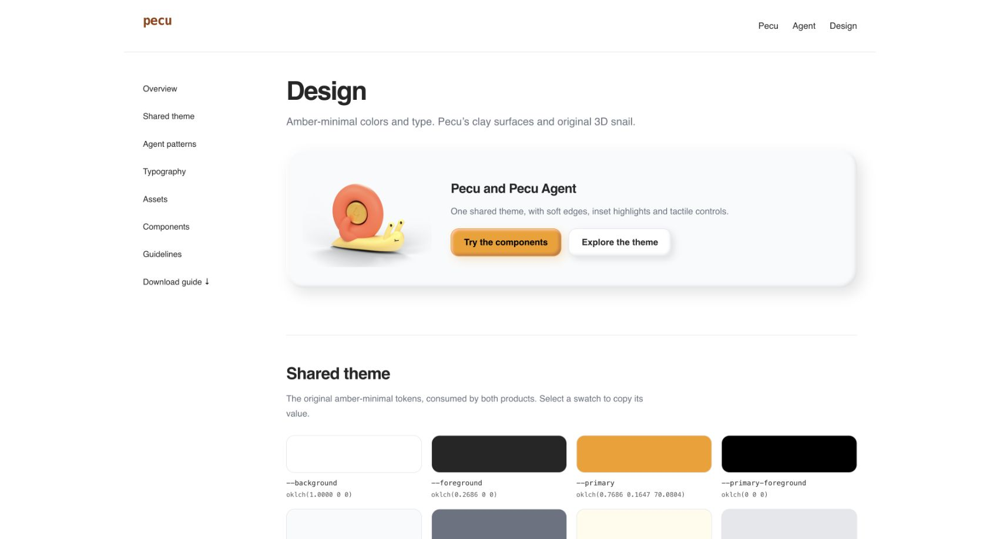
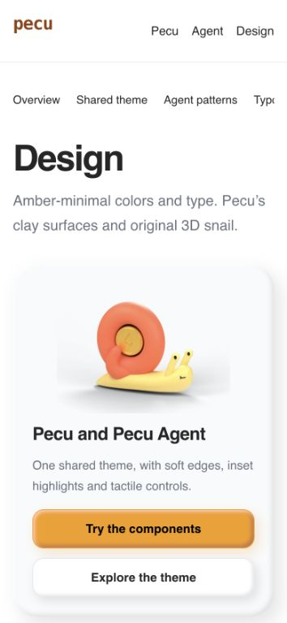
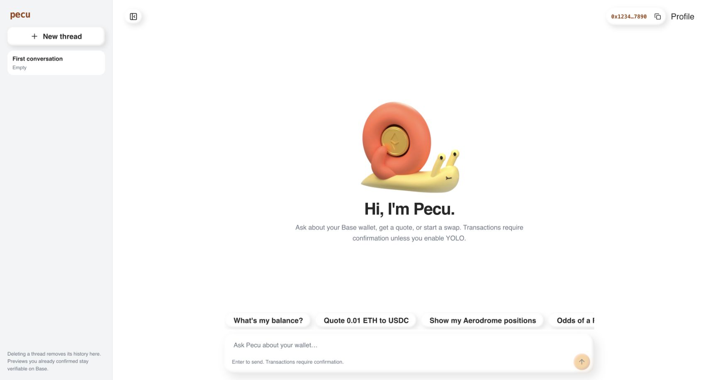
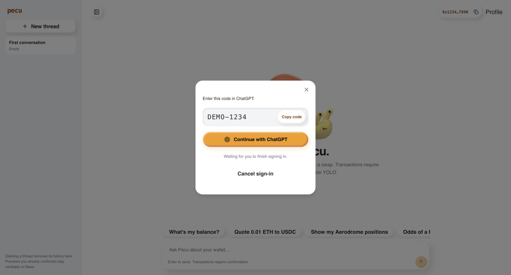

Pecu and Pecu Agent now share amber-minimal colors and typography. The original snail, soft control shapes, inset highlights and clay shadows remain.
The theme JSON is pinned locally. Both products import its generated CSS and one
shared clay stylesheet. /design reads those same sources during the build.
bun run --cwd apps/pecu design:check checks theme drift and CSS, then runs
@shadcn/lint through Oxlint. It rejects raw palette colors, arbitrary hex colors,
inline shadow/font/color overrides and local redefinitions of upstream tokens.
Data-driven chart styles have explicit exceptions. Visual review is still needed.
Both frontend builds and typechecks passed. Policy tests and deliberately invalid lint probes passed. Browser checks covered the reference, homepage, real Agent components, mobile layout, command completion and the simulated connection panel. All transaction and sign-in data was fictional. No funds moved or real OAuth started.
Product deployment remains pending. Unrelated analytics work was preserved. Changes remain uncommitted on main. This preview is an isolated deployed build.



